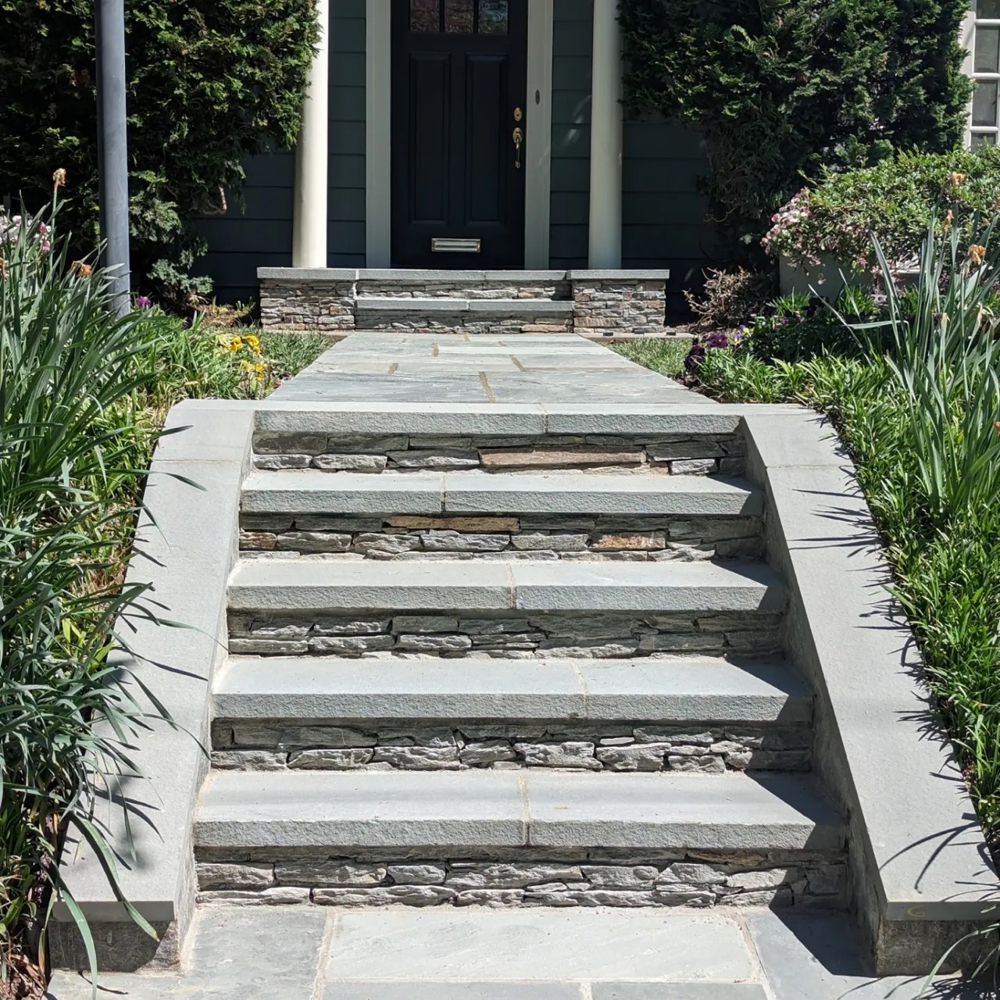
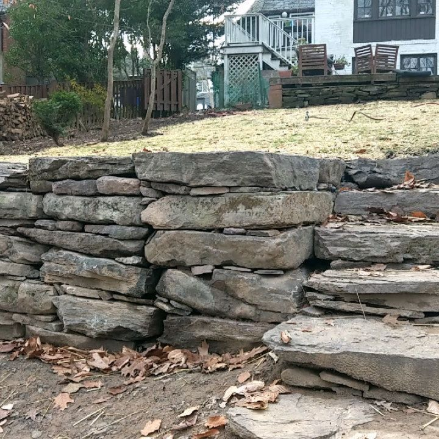
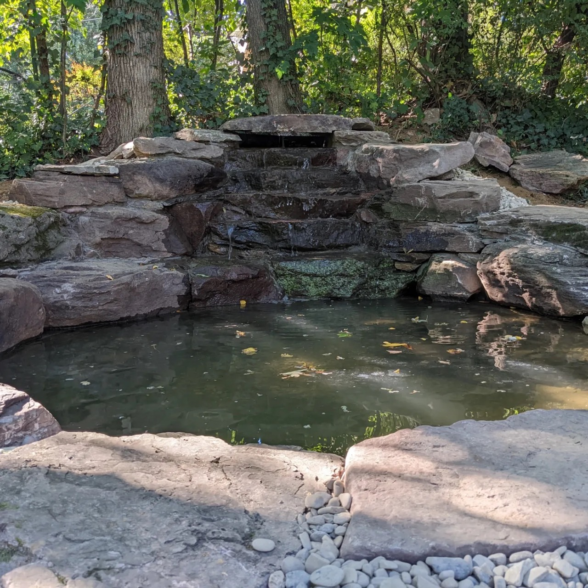
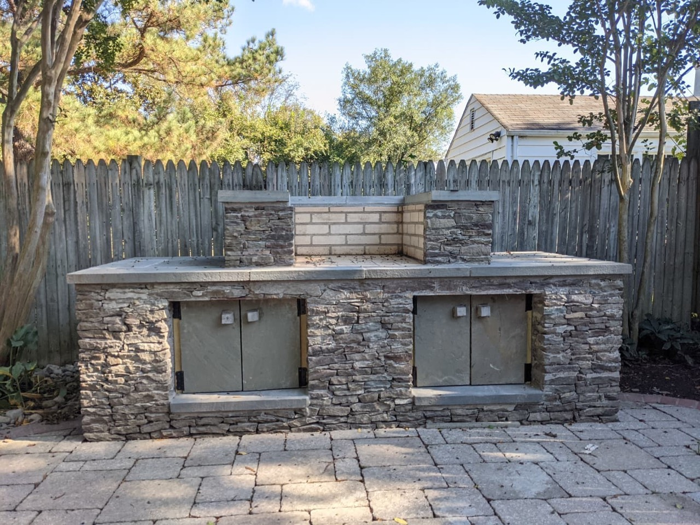
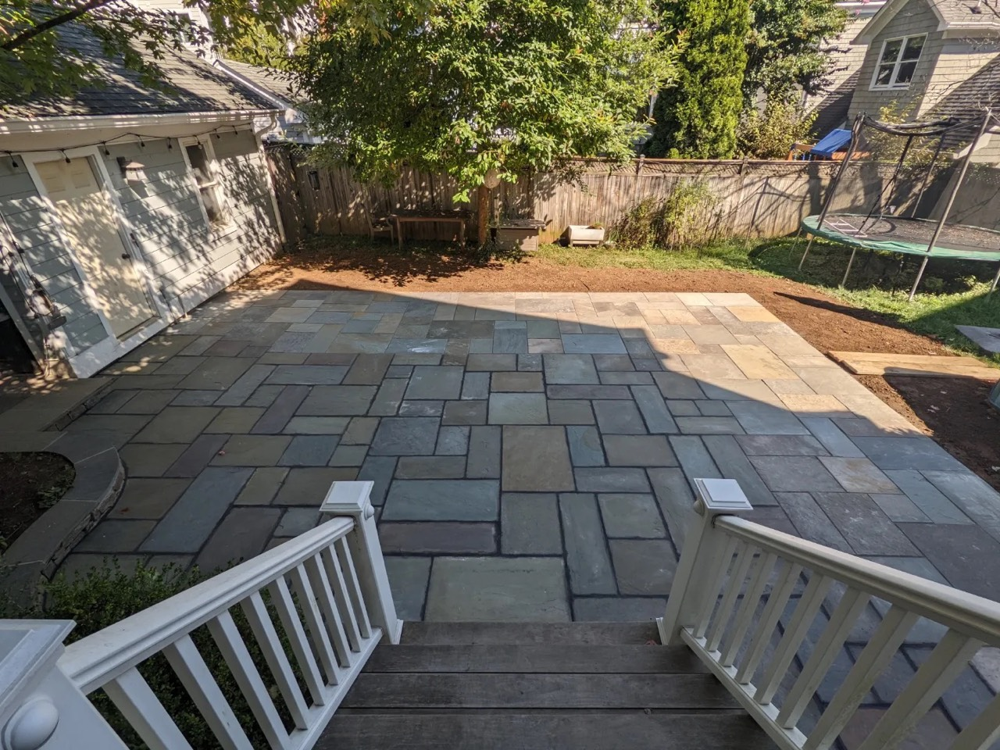
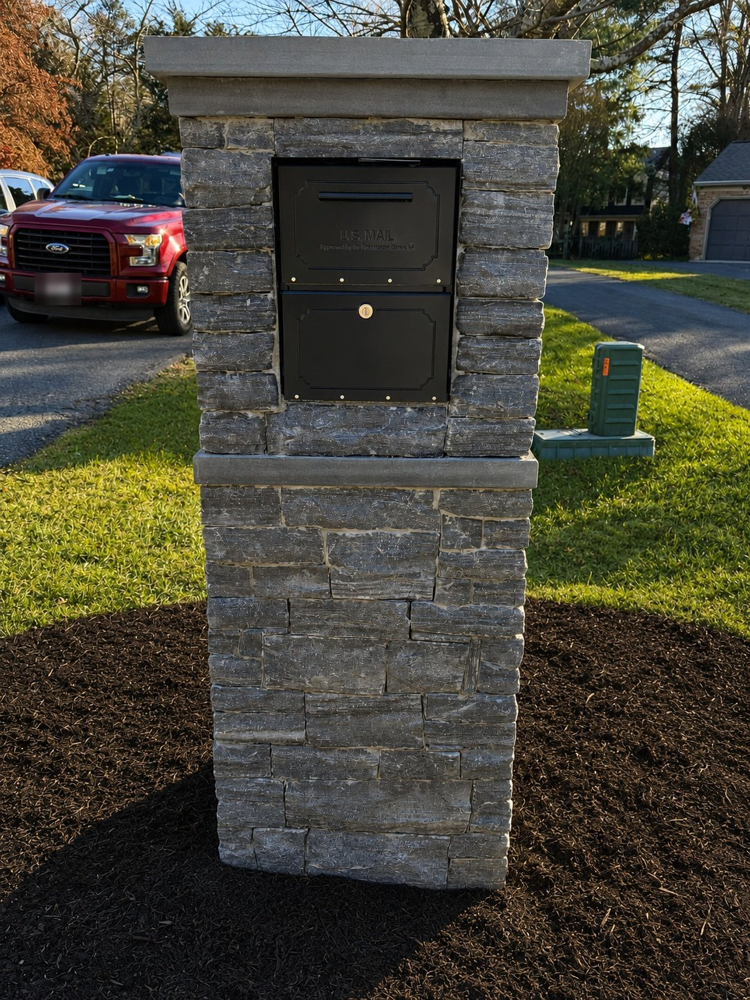
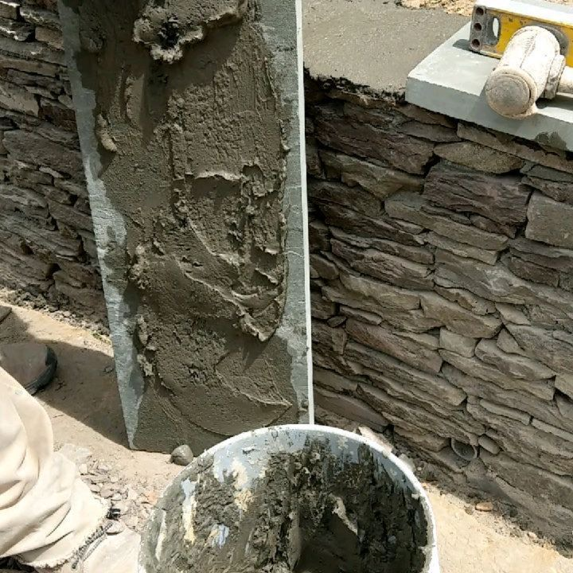
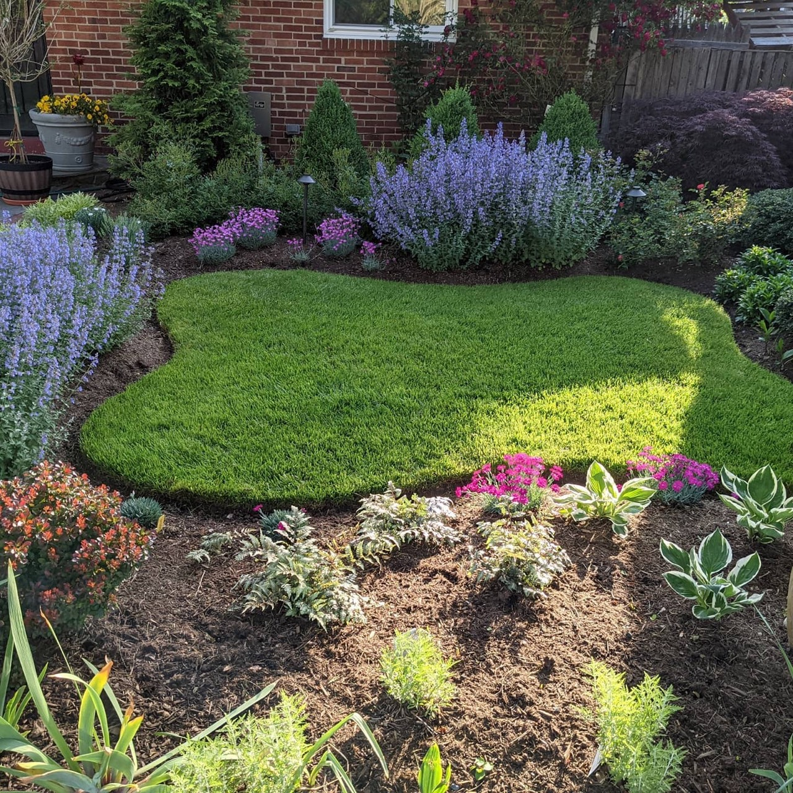

Stone Steps & Entrances
Front steps, garden stairs and landings in bluestone, flagstone and natural stone.
See steps we've built →Family-owned stone masonry
Stone steps, walls, flagstone patios and mailbox pillars by Juan Flores, built for homes across Montgomery County, Washington, DC and Northern Virginia since 2002.
Free on-site visit · Written estimate before any work begins

What we build
Every project is built with natural stone, set by hand, and made to look like it has always been there.
Front steps, garden stairs and landings in bluestone, flagstone and natural stone.
See steps we've built →
Solid stone mailbox pillars and driveway piers that give your home a finished look.
Learn about pillars →
Flagstone and bluestone patios and paths, cut and fitted piece by piece.
See patios and paths →
Retaining walls, garden walls and seat walls, including Carderock stone.
See stone walls →
Waterfalls, ponds and fountains built into natural stone settings.
See water features →
Stone grill stations, fire pits and seating areas for entertaining outdoors.
See outdoor living →Before & after


Bare dirt and an old patio became one large bluestone patio, with every stone cut and set by hand in a rectangular pattern.

Our signature work
It's the first thing guests see when they arrive. We build each pillar from natural stone to match your home, like Pennsylvania fieldstone with a flagstone cap.
Meet the craftsman
Juan builds the old-fashioned way. Each stone is chosen, shaped and set by hand, so the finished work fits your home and stands up to Washington winters.
He works with natural materials that age well: Carderock stone, Pennsylvania fieldstone and flagstone, bluestone and brick. Every job starts with a visit to your home and ends with the site cleaned up.


Also available
Once the stonework is in, we can plant and finish the yard around it.
How it works
Call (240) 462-1150 or send the form below. Tell us what you have in mind.
We come to your home, look at the site and talk through options and stone.
You get a clear price in writing. No pressure and no surprises.
The work is done by hand, and we leave your property clean.
Where we work
Free estimate
The quickest way is to call. If no one answers, leave a message and we'll call you back.
(240) 462-1150